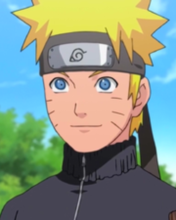
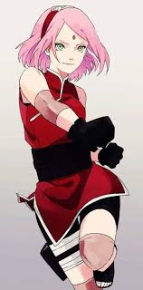
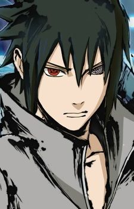
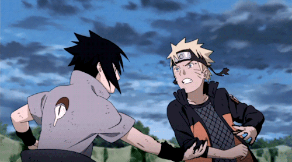

¡A continuacion, te mostraré algunos personajes de la serie, recuerda no estan todos ya que la pagina es nueva !

| Personajes principales |
| Nombre |
Historia |
Imagen |
| Naruto Uzumaki |
Naruto Uzumaki (うずまき ナルト Uzumaki Naruto?) es el protagonista de la serie, era un Genin. Actualmente es el Séptimo Hokage. Fue el primer personaje creado por Kishimoto durante la concepción de la serie, y fue diseñado con varias características de otros personajes del género shōnen. En la historia, Naruto tuvo la ambición de convertirse en Hokage, el líder de la Aldea Oculta de la Hoja. Es marginado por los demás aldeanos debido a que es el Jinchūriki de Kurama, el zorro de nueve colas que atacó a Konoha el día de su nacimiento.13 El compensa esto con su personalidad alegre, alborotada y divertida, y a lo largo de la historia se hace amigo de varios ninjas tanto extranjeros como de Konoha, además de desarrollar una estrecha relación con Sasuke y Sakura, sus compañeros del Equipo 7. A lo largo de la historia se aprecia su evolución como ninja y persona, pasa de ser un niño travieso que burla a todo el mundo, incluso al Tercer Maestro Hokage a ser un ninja con algunas habilidades bastante recurrentes. En el anime en japonés, su voz es doblada por Junko Takeuchi, mientras que en el doblaje mexicano y español es doblado por Isabel Martiñón y Javier Balas, respectivamente. |
|
| Sakura |
Sakura Haruno (春野 サクラ Haruno Sakura?) es una Jōnin de Konohagakure, era la integrante femenina del Equipo 7. Kishimoto la creó como la heroína de la serie, aunque admitió que poca percepción de como debería ser una heroína ideal. En su niñez, Sakura recibió burlas por otros niños debido a su larga frente, una característica que Kishimoto ha tratado de enfatizar en las apariciones de Sakura. Fue consolada y defendida por Ino Yamanaka por las burlas. Mientras las dos crecían, sin embargo, se hicieron distantes debido al cariño que sentían por Sasuke. Durante la mayoría de la primera parte, Sakura está enamorada de Sasuke, y desprecia a Naruto Uzumaki. Pero después de que Sasuke abandona la aldea, Naruto le hizo una promesa de traerlo de vuelta. Después de que el primer intento es retrasado por los Cuatro del Sonido, Sakura decide volverse fuerte entrenando con Tsunade. En la segunda parte, a sus 16 años, muestra habilidades altamente desarrolladas por su entrenamiento, obteniendo una enorme fuerza y poder de diez hombres. En el anime en japonés, su actriz de doblaje es Chie Nakamura, mientras que en el mexicano y español, son Christine Byrd y Pilar Martín, respectivamente. |
 |
| Sasuke Uchihag |
Sasuke Uchiha (うちは サスケ Uchiha Sasuke?) es el deuteragonista de la serie, es un Genin y un Ninja Renegado, y uno de los integrantes del Equipo 7. Fue creado para ser un rival para Naruto, así como un «genio cool», que Kishimoto creyó que fue una parte integral de una ideal rivalidad. Uno de los pocos miembros restantes del clan Uchiha, junto con Obito, ya que su hermano mayor, Itachi, asesinó al resto del clan. Debido a esto, el único deseo de Sasuke es asesinar a Itachi, y desarrolla una personalidad fría e introvertida. A lo largo de la primera parte, sus interacciones con sus compañeros de equipo, a quienes aprecia, lo hacen enfocarse menos en la venganza al principio de la historia. Durante un encuentro con su hermano en la primera parte, Sasuke es vencido fácilmente, lo que lo conduce a dejar la aldea para buscar más poder del criminal Orochimaru. Los intentos de sus antiguos compañeros de traerlo de vuelta a Konoha forman uno de los mayores componentes de la segunda parte. En la Cuarta guerra mundial Shinobi, Sasuke se une a Sakura y Naruto para vencer a Tobi. En el anime japonés, Sasuke es doblado por Noriaki Sugiyama, mientras que en el doblaje mexicano y español, lo hacen Víctor Ugarte y Adolfo Moreno, respectivamente. |
 |

Inicio -
Personajes -
Capitulos -
Próximamente
Copyrigth 2020
Mandanos un mensaje al correo
juliocorva2002@gmail.com
|